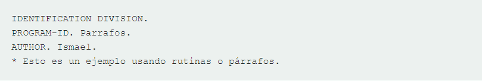

Un program COBOL está compuesto de 4 divisiones bien diferenciadas, que son:
Cobol
Sintaxis del lenguaje de programación Cobol
Tipos de datos
División de Información se utiliza para definir las variables utilizadas en el programa. Para describir los datos en COBOL, uno debe comprender los siguientes términos:
Nombre de datos
Nombres de datos debe estar definido en la División de Información antes de utilizarlas en la Division de Procedure. Deben tener un nombre definido por el usuario; palabras reservadas no se pueden utilizar. Nombres de datos da referencia a los lugares de memoria donde se almacenan los datos reales. Pueden ser primarias o tipo de grupo.El ejemplo siguiente muestra los datos válidos y no válidos los nombres:
Número de Nivel
Número de nivel se utiliza para especificar el nivel de datos en un registro. Que se utilizan para diferenciar los elementos elementales y elementos de grupo. Elementos elementales pueden agruparse para crear elementos de grupo.
El ejemplo siguiente muestra Grupo elemental y los elementos:
Estructura repetitiva
Párrafos o Rutinas. Siempre que se ejecuta un programa en COBOL, se hace de forma secuencial, empezando desde arriba hasta que encuentre la instrucción de finalizar el programa. Las rutinas es una forma de alterar ese orden, es decir, le damos el control a un párrafo y ejecuta todas las instrucciones que haya en éste.


Si observamos detenidamente, lo que hacemos es el párrafo Inicio, dentro de este llamamos a la Rutina 2, dentro de éste llamamos a la Rutina 1 y por último desde la rutina1 llamamos al párrafo rutina3. Una vez terminado estas rutinas, el programa vuelve a su orden normal, es decir, realiza las sentencias que le faltaban del párrafo Inicio, terminando así con la ejecución del programa. También hay que decir, que hacer párrafos estructura un poco mejor el programa y puede resultar un poco mas legible y comprensible.
Simbolos del lenguaje de programación Cobol
"Los personajes son los más bajos en la jerarquía y que no se puede dividir más. El COBOL Juego de caracteres incluye 78 caracteres que se muestran a continuación:
| Símbolo | Significado |
| A-Z | Alfabetos(mayúsculas) |
| A-z | Alfabeto (Minúsculas) |
| 0-9 | Valor Numérico |
| Espacio | |
| + | Signo más |
| - | Signo menos o guión |
| * | Asterisco |
| / | Barra inclinada |
| $ | Símbolo de moneda |
| , | Coma |
| ; | Punto y coma |
| . | Punto decimal o Período |
| " | Comillas |
| ( | Paréntesis izquierdo |
| ) | Paréntesis derecho |
| > | Mayor que |
| < | Menos de |
| : | Colon |
| ' | Apóstrofe |
| = | Signo Igual |
Estructura del lenguaje de programación Cobol
La estructura general sería la siguiente...
IDENTIFICATION DIVISION
PROGRAM-ID
AUTHOR
INSTALLATION
DATE-WRITTEN
DATE-COMPILED
SECURITY
ENVIRONMENT DIVISION
CONFIGURATION SECTION
SOURCE-COMPUTER
OBJECT-COMPUTER
SPECIAL-NAMES
INPUT-OUTPUT SECTION
FILE CONTROL
I-O-CONTROL
A que tipo de paradigma pertenece?
El lenguaje Cobol es un ejemplo del paradigma de programación imperativo
Aplicación a descargar para editar y ejecutar
Se puede descargar el compilador oficial de Cobol en el siguiente link: Aqui
Ejemplo de programa
Factorial de N
1 IDENTIFICATION DIVISION.
2 PROGRAM-ID. FACTORIAL.
3 DATA DIVISION.
4 WORKING-STORAGE SECTION.
5 77 N PIC 9(4).
6 77 A PIC S9(4) VALUE 0.
7 77 F PIC 9(4) VALUE 1.
8 PROCEDURE DIVISION.
9 PARA.
10 DISPLAY "ENTER A NUMBER.".
11 ACCEPT N.
12 PERFORM PARA1 UNTIL A = N.
13 DISPLAY "THE FACTORIAL IS".
14 DISPLAY F.
15 STOP RUN.
16 PARA1.
17 ADD 1 TO A.
18 COMPUTE F = F * A.